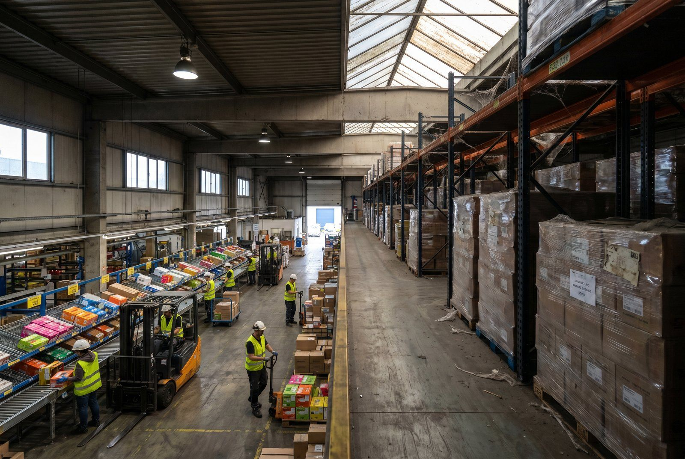

Lageromsoetningshastighed måler hvor mange gange om året du sælger og genopfylder dit lager. En høj hastighed betyder kapital i bevægelse. En lav hastighed betyder kapital der bare ligger og venter.
Det er en af de simpleste og mest afslørende økonomiske måltal for et lager, men stadig undervurderet af de fleste eCommerce-virksomheder.
👉 Vil du kende din lageromsoetningshastighed? Kontakt SmartPack
Sådan beregner du det
Lageromsoetningshastighed = Årligt vareforbrug (kostpris) / Gennemsnitlig lagerværdi (kostpris)
Eksempel: Du sælger varer for 3.600.000 kr. om året til kostpris, og din gennemsnitlige lagerværdi er 600.000 kr. Hastighed = 3.600.000 / 600.000 = 6 gange om året.
Det betyder at du i gennemsnit sælger hele din beholdning og genkober den 6 gange om året.
Den inverse: Days Inventory Outstanding (DIO) = 365 / hastighed = 365 / 6 = 61 dage. Du holder i snit 61 dages lager.
Hvad er et godt tal?
Det varierer med branche og forretningsmodel:
| Branche | Typisk omsoetningshastighed |
|---|---|
| FMCG / dagligvarer | 12-30+ gange/år |
| Elektronik eCommerce | 8-15 gange/år |
| Mode og tøj | 4-8 gange/år |
| Specialvarer / hobby | 2-6 gange/år |
| B2B industrivarer | 3-8 gange/år |
Under 4 gange om året for en eCommerce-virksomhed er typisk et problem. Det svarer til mere end 90 dages lager, og kapitalbindingsomkostningen begynder at bide.
Hvad driver en lav omsoetningshastighed?
Tre ting er hyppigst:
- Overbestilling. For store indkobsordrer, for lange leadtider der kompenseres med buffer, eller manglende tillid til lagernojagtighedsdata.
- Dead stock der ikke ryddes. Varer der ikke saelger, men forbliver på lageret fordi ingen har besluttet sig for at handle på dem.
- Skaevsket sortiment. For mange langsomt-sælgende varianter og for få hurtige. ABC-analysen afslorer dette hurtigt.
Konsekvenser af lav omsoetningshastighed
Kapitalbinding er den direkte konsekvens. På et lager med 1.000.000 kr. i varer og en omsoetningshastighed på 3 i stedet for målene 8 er der 535.000 kr. unodvendig bundet kapital (lager på 3 vs. lager på 8 = 333k vs. 125k pr. omsoetningscyklus). Det er 535.000 kr. der kunne bruges til andet.
Hert il kommer: højere risiko for at varer udgår eller a moden skifter, mere lagerplads brugt til langsomme varer, og en tendens til at nye indkob skal konkurrere med dead stock om pladsen.
Sådan forbedrer du hastigheden
- Kør en ABC-analyse. Find hvilke 20% af dine SKUs der genererer 80% af omsoetningen. Fokuser ind-køb på dem og trim de slow movers.
- Saet klare regler for dead stock. Varer der ikke har bevæget sig i 90 dage: discount eller returner til leverandør. Varer ældre end 180 dage: aktiv handling obligatorisk.
- Optimer dine indkobsmængder. Reducer buffers når lagernojagtighedsdata er pålidelig nok til at stole på.
Sådan understotter SmartPack det
SmartPack har indbygget ABC-analyse der viser omsoetningshastighed per SKU og kategori. Du kan se i realtid hvilke varer der er ved at blive dead stock, og systemet kan advare automatisk når en vare ikke har bevæget sig i en defineret periode.